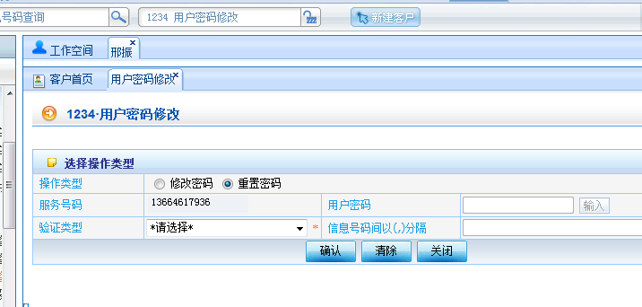

（1）进入方式
1、快速登录输入1234
2、菜单路径：“综合客服”---》“普通变更”---》“用户密码修改”
（2）界面形式及操作步骤说明
1）进入“用户密码修改”操作界面
2）点选“重置密码”

3）选择“验证类型”
①选择“凭证件”
点击“确认”
由用户通过小键盘在“密码”和“密码检验”处输入新密码，要求二次输入一致
根据客户本次是否办理多个业务，点击“打印”或“合并打印”或“打印存储”
工单由客户签字后点击确认。工单需后续合并打印的，此处直接点击“确认”，然后在“工单补打”界面中进行工单合并打印后，由客户签字确认。
②选择验证类型“详单核对”

1）验证类型选择“详单核对”
2）输入需要核对的被叫号码（由客户口述，营业员输入。被叫号码包括语音被叫和短信被叫，号码间用“,”号隔开）
3）点击确认。验证通过后，后续操作同“凭证件”办理方式。如验证通不过，可返回详单核对信息号码输入界面，重新进行输入。